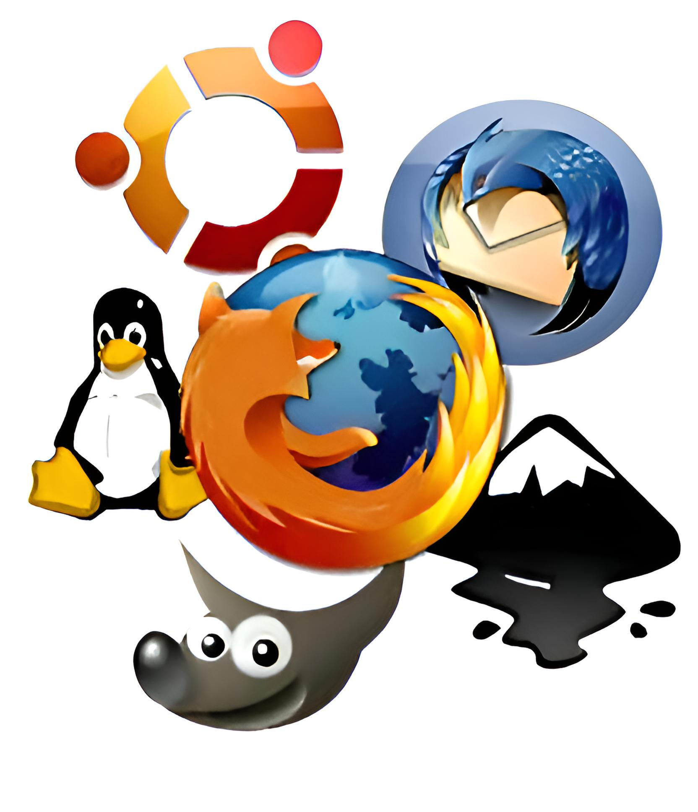

¿Qué es la Programación?
La programación es el proceso de crear instrucciones que una computadora puede interpretar y ejecutar. Estas instrucciones se escriben en lenguajes de programación y permiten desarrollar programas, aplicaciones, sistemas operativos, videojuegos, páginas web y mucho más.
Programar significa resolver problemas mediante lógica, algoritmos y estructuras bien definidas. Es la base del desarrollo tecnológico moderno.
¿Qué es el Desarrollo de Software?
El desarrollo de software es el conjunto de procesos que permiten diseñar, crear, probar y mantener aplicaciones y sistemas informáticos.
Incluye planificación, diseño, programación, pruebas, implementación y mantenimiento.
Lenguajes de Programación
Lenguajes de Bajo Nivel
Están más cerca del hardware. Ejemplo: lenguaje máquina y ensamblador. Ofrecen mayor control pero son más difíciles de usar.
Lenguajes de Alto Nivel
Son más fáciles de entender por los humanos. Ejemplos: Python, Java, C++, JavaScript.
Tipos de Programación
Programación Web
Permite crear páginas y aplicaciones web. Se utilizan tecnologías como HTML, CSS y JavaScript.
Programación de Escritorio
Aplicaciones instaladas en computadoras. Ejemplo: editores de texto, reproductores multimedia.
Programación Móvil
Desarrollo de aplicaciones para teléfonos y tablets.
Programación de Videojuegos
Combina gráficos, física, lógica y sonido para crear experiencias interactivas.
Conceptos Fundamentales
Algoritmos
Conjunto ordenado de pasos para resolver un problema.
Variables
Espacios de memoria que almacenan datos.
Estructuras de Control
Permiten tomar decisiones (if, else) o repetir acciones (bucles).
Funciones
Bloques de código reutilizables que realizan tareas específicas.
Frontend y Backend
Frontend
Parte visual de una aplicación o página web. Es lo que el usuario ve e interactúa.
Backend
Parte interna que maneja datos, servidores y lógica.
Bases de Datos
Las bases de datos permiten almacenar y organizar información. Son esenciales para aplicaciones modernas.
Metodologías de Desarrollo
Existen diferentes formas de organizar el trabajo en proyectos de software, como el modelo en cascada o metodologías ágiles.
Software Libre y Aplicaciones
El software libre permite usar, estudiar, modificar y distribuir programas. Sistemas como Linux y aplicaciones como Firefox o GIMP son ejemplos importantes en el mundo del desarrollo.

Importancia de la Programación
La programación impulsa la innovación tecnológica. Permite crear herramientas que mejoran la educación, la medicina, la industria, la comunicación y el entretenimiento.